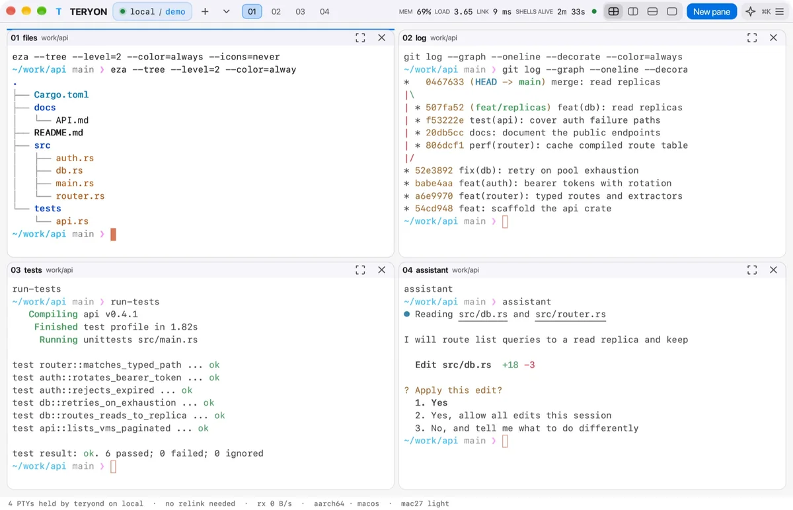
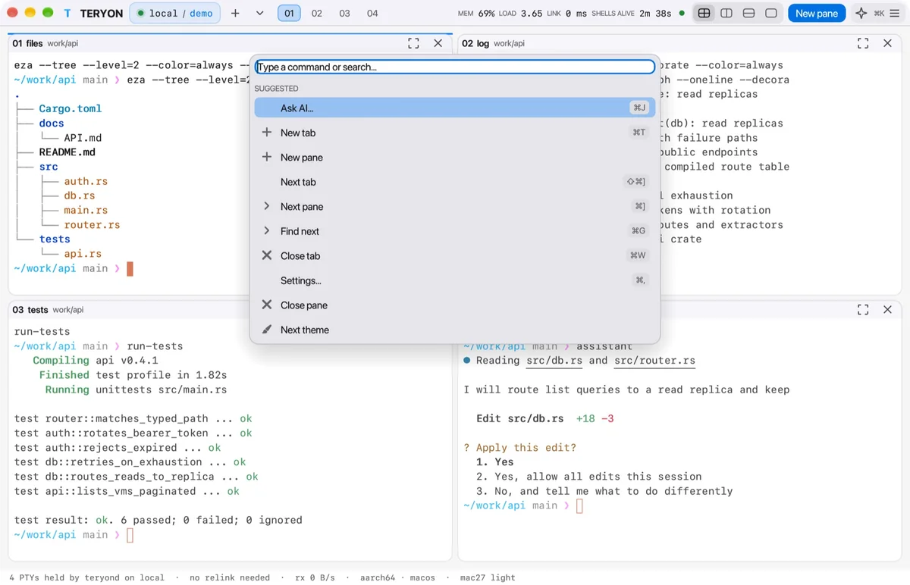
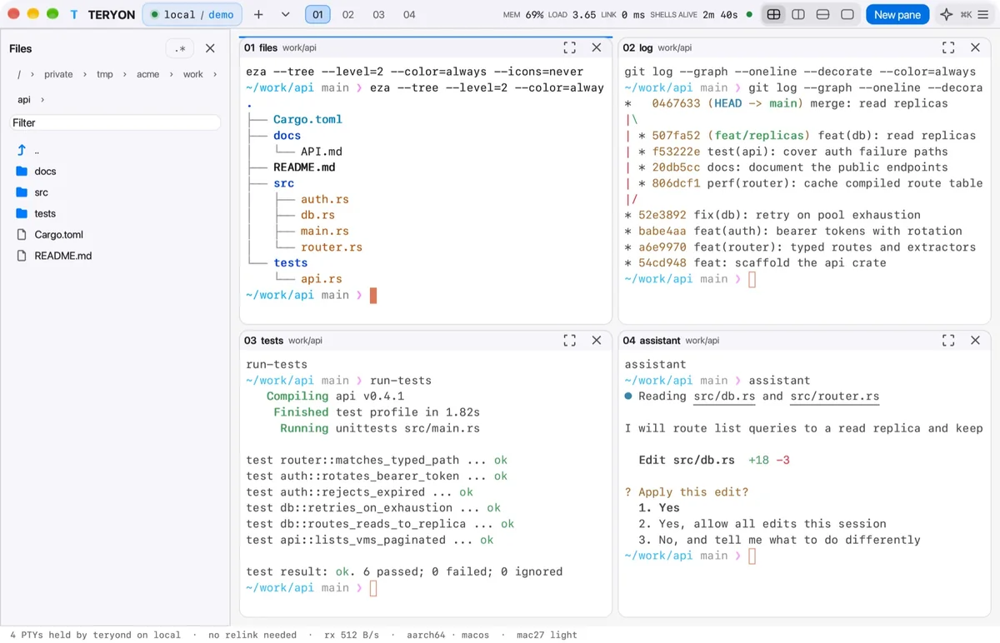

Zyvor · remote workspace
Teryon
Your Mac mini. Wherever you work.
Shells that outlive your connection. A per-user service on your Mac mini or Linux host owns the terminals; plain OpenSSH carries the interface. Close the lid, switch networks, come back tomorrow and reattach to the same live shells. A TUI, a native desktop app, agent-aware panes, a file browser and an MCP server. Open source under Apache-2.0.
Download TERYON 0.24.0Learn more
macOS and Linux · notarized DMG · Free and open source (Apache-2.0) · engineering preview

Separate the shell from the connection.
The host owns the terminals, so a closed lid, a changed network or a quit client does not end your work. Reconnect to the same live shells over the OpenSSH you already use: your keys, jump hosts and aliases, no new ports and no new accounts.
Features
Desktop
One slim bar. ⌘K for the rest.
A native GPU window with pane trees, tabs and a command palette. Output search, Vi copy mode, inline images and ⌘-click links.
Desktop guide
Files
A Finder in your terminal.
⌘B opens a file browser that follows cd, locally or over SSH. Quick Look previews files with syntax colours. Nothing is deleted: items go to the Trash.
Features
And the rest of the toolbox.
Built for coding agents
Status chips for Claude Code, Codex, Gemini, aider, Cursor and OpenCode, Git worktrees, an opt-in sandbox and an MCP server. The sandbox is a guard against mistakes, not a boundary against a hostile program.
A link that explains itself
When the connection drops you see the real reason and the next step, not a spinner.
23 themes
Apple, Mac27, Tokyo Night, Catppuccin, Dracula, Nord and more, with a WezTerm export.
Everyday CLI
teryon exec, capture, push, pull, forward and saved layouts, over the same SSH link.
Plain OpenSSH, nothing hidden.
Your SSH
Your keys, ports, jump hosts and aliases. TERYON does not bypass firewalls or NAT.
A per-user service
The host runs a service for your user. No new ports and no new accounts.
Sandbox, honestly
The agent sandbox guards against mistakes and leaked credentials. It is not a boundary against a hostile program.
Specs and requirements.
- Platforms
- macOS and LinuxDesktop app and DMG for macOS; tar.gz archives for macOS arm64 and Linux x86_64.
- Build
- Notarized DMGTERYON-0.24.0.dmg is Developer ID signed and notarized by Apple.
- Version
- 0.24.0An engineering preview, not a claim of production maturity.
- Licence
- Apache-2.0Written in Rust.
- Transport
- Plain OpenSSHNeeds working non-interactive key or agent authentication.
- Host
- Mac mini or LinuxA per-user service owns the shells.
Honest limits
A reboot, daemon crash or power failure can end live processes. Saved layouts recreate shells, not process memory. There is no Mosh-compatible roaming, QUIC or NAT traversal; reconnecting needs a reachable host and valid SSH authentication. Windows is not planned.
Get started in three steps.
Install
Get
TERYON-0.24.0.dmgfrom the release page, or build from source withcargo build --release --locked.Prepare the host
Enable Remote Login on the Mac mini, set up SSH keys, and install teryon there. The Mac mini guide has every step.
Connect
Run
teryon doctor HOST, thenteryon connect HOST --workspace NAME. Detach with Ctrl+Space, d; your shells keep running.
TERYON 0.24.0 for Mac · SHA-256
5e4c2decf4034ffa4e44c0120fc92dbff41c35175a64cc0afd2f815467079facVerify: echo "5e4c2decf4034ffa4e44c0120fc92dbff41c35175a64cc0afd2f815467079fac TERYON-0.24.0.dmg" | shasum -a 256 -c
Free. Support it if you like.
Free under Apache-2.0. If it helps you, you can donate any amount you like.
A donation is voluntary and supports development and maintenance. It is not a purchase: it buys no support, SLA, features, priority or license. Support contracts are separate: sales@zyvor.dev.
Questions, answered.
Is TERYON free?
Yes. It is open source under Apache-2.0. A donation is optional and buys no support, features or licence.
Do my shells survive closing the laptop?
Yes. They run on the host, so a client disconnect does not intentionally end them. A reboot, daemon crash or power failure of the host can.
Does it replace SSH?
No. It uses plain OpenSSH as the transport, with your existing keys, ports, jump hosts and aliases.
Will macOS warn me when I open it?
No for the DMG: it is Developer ID signed and notarized by Apple. The SHA-256 is on this page and in SHA256SUMS-macos-0.24.0.
How mature is it?
It is an engineering preview with integration tests and release automation, not a claim of production maturity or universal terminal compatibility. See the known limits.
Are the screenshots real?
Yes: real captures of the macOS app on a throwaway demo workspace.